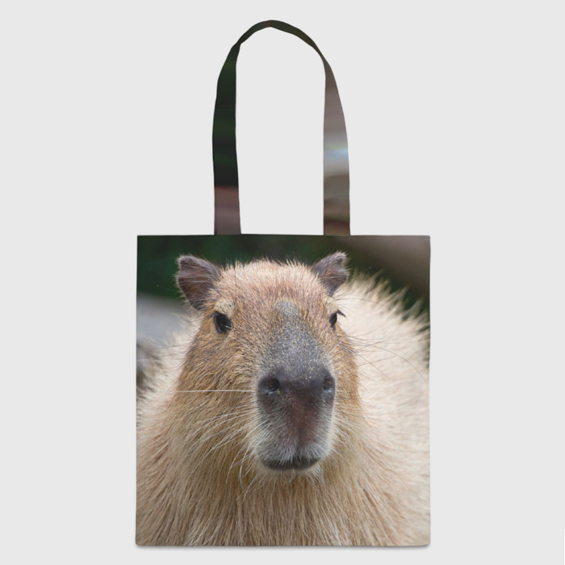
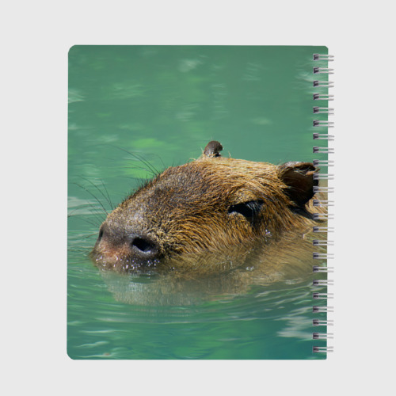
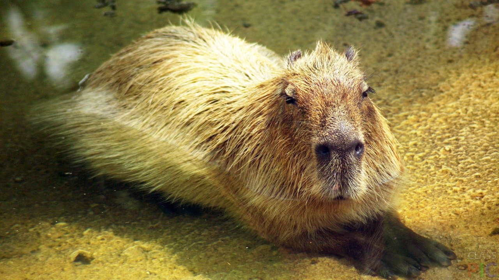
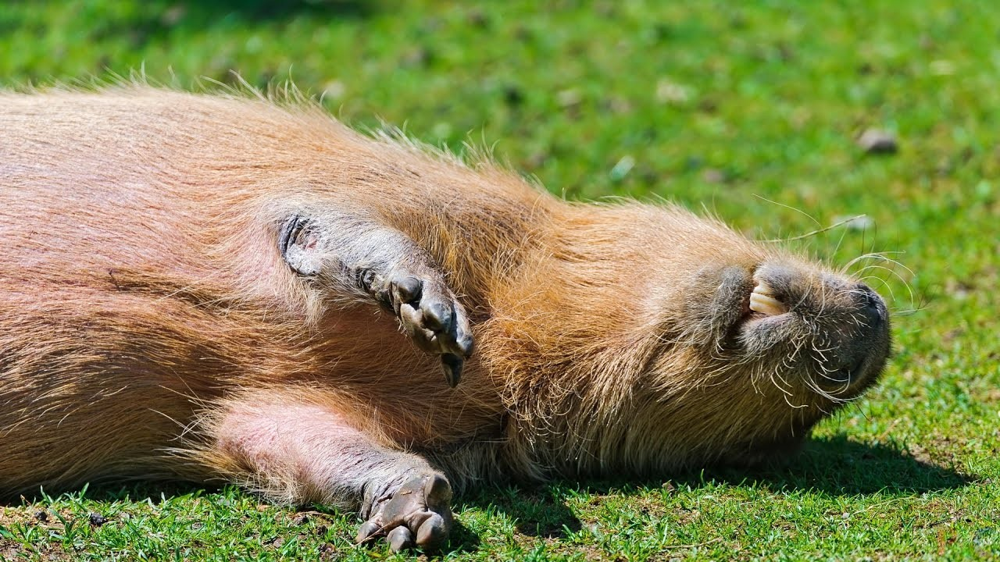

Здесь вы сможете узнать о них больше
Ведь они прикольные существа на планете Земля
(Вернуться на главную страницу) (Вернуться на предыдущую страницу)В 2023 году популярность капибар в интернете стала довольно высокой. С ними делают мемы, делают одежду с их изображением и прочую атрибутику.А короткие ролики с капибарами набирают сотни миллионов просмотров и лайков.
 Капибары просто очень милые. Их дружелюбие пришелось по душе людям, а их поведение не вызывает ничего, кроме умиления. Они лениво двигаются,валяются на берегах водоемов. Их расслабленность доставляет людям удовольствие.
Капибары настолько расслабленные, что они даже не обустраивают нору. Зверьки располагаются прямо на земле. И такое тоже очень нравится людям.
Капибара-это домашнее животное.
В наше время некоторая часть людей заводит себе капибару и она становится их доашним питомцем. Но за капибарой нужен особый уход. Им нужно выделить место рядом с водоемом,чтобы в жаркое время они купались там.Также они любят грызть деревья, чтобы стачивать свои зубы.Они травоядные существау,но в домашней обстановки их подкармливают специальным кормом для грызунов,чтобы они могли получить нужные витамины и минералы,которых их будет не хватать.

Какбы там ни было, капибара-это дикое животное.Оно привыкло жить в свободе.Хоть оно и очень милое,но его не стоит заводить себе в качестве питомца,потому что его не стоит держать в заперти в наших домашних условиях,им нужна свобода,как и любым диким животным.
Мемы с участием капибар.